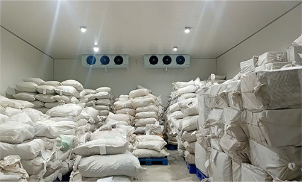
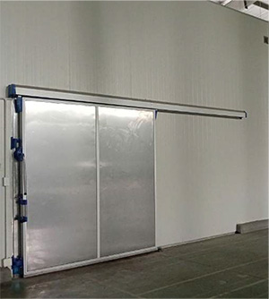
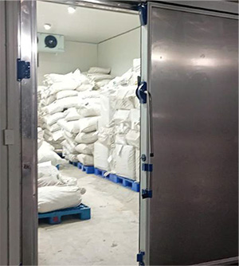
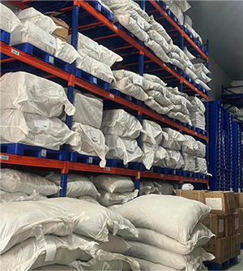
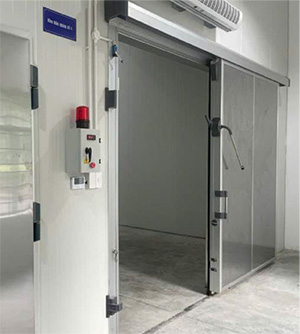
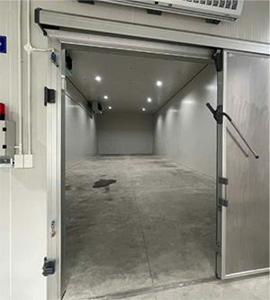

HỒ SƠ PHÁP LÝ &
HỒ SƠ NĂNG LỰC
Hồ sơ pháp lý & Hồ sơ năng lực
01
Hồ sơ pháp lý & Hồ sơ năng lực
02
Hồ sơ pháp lý & Hồ sơ năng lực
03
Hồ sơ pháp lý & Hồ sơ năng lực
04
Hệ thống kho lạnh Bắc Nam
09
KHO LẠNH MIỀN BẮC
- Địa chỉ: Công ty cổ phần Anvy. Thôn Bá Khê, xã Tân Tiến, huyện Văn Giang, tỉnh Hưng Yên.
- Nhiệt độ: 2°-8 °C, H < 55%
- Diện tích 900 m2, trần cao 5 m




KHO LẠNH MIỀN NAM
- Địa chỉ: Công ty cổ phần Anvy chi nhánh Thành phố Hồ Chí Minh. Kho xưởng số 10, cụm 3, nhóm CNII, đường số 13, khu công nghiệp Tân Bình, phường Tây Thạnh, quận Tân Phú, TP Hồ Chí Minh.
- Nhiệt độ: 2°-8 °C, H < 55%
- Diện tích 800 m2, trần cao 5 m


Hệ thống kho lạnh Bắc Nam
10
CÁC MÁY
KIỂM TRA
CHẤT LƯỢNG
Các máy kiểm tra chất lượng
11

Kiểm định hàm lượng hoạt chất – Hệ thống HPLC
(High Performance Liquid Chromatography)

Kiểm tra kim loại nặng – Hệ thống AAS
(Atomic Absorption Spectroscopy)

Kiểm tra dư lượng thuốc bảo vệ thực vật – Hệ thống GC
(Gas Chromatography)
Các máy kiểm tra chất lượng
12
QUY TRÌNH
KIỂM SOÁT
CHẤT LƯỢNG
DƯỢC LIỆU
Quy trình kiểm soát chất lượng dược liệu
13
QUY TRÌNH KIỂM SOÁT

ƯU ĐIỂM DƯỢC LIỆU PHIẾN ANVY

Quy trình kiểm soát chất lượng dược liệu
14